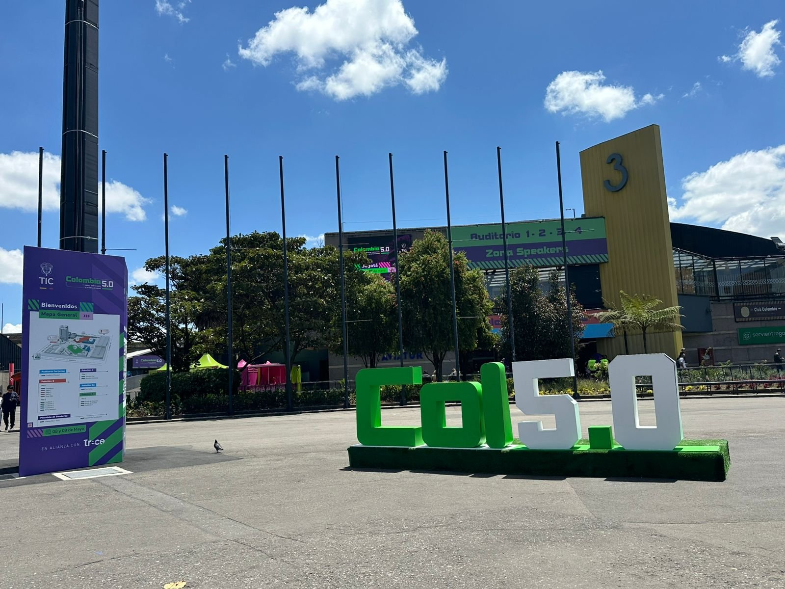
Encuentro de Ecosistemas Digitales
Tecnología · Animación · Inteligencia Artificial · Innovación
Colombia 5.0 es el gran encuentro nacional de ecosistemas digitales organizado por el Ministerio TIC de Colombia. Es un espacio donde gobierno, academia, empresas, emprendedores y ciudadanía se reúnen para construir juntos una sociedad digital más incluyente, creativa y conectada con las realidades del país.
Durante dos intensos días en Corferias, Bogotá, el evento reúne a más de 25.000 asistentes y cerca de 200 conferencistas nacionales e internacionales de más de 15 países, en torno a temas como inteligencia artificial, animación, videojuegos, marketing digital, salud digital y ciberseguridad.
Posicionar a Colombia como actor clave en las industrias tecnológicas de la región, conectando los distintos actores del ecosistema digital para generar sinergias, compartir experiencias y abrir oportunidades de colaboración en un momento de acelerada digitalización. El evento busca también reducir la brecha digital, fomentar el talento local y presentar la Misión de Transformación Digital 2035 como hoja de ruta nacional.
Exploración del rol del FX Artist en la industria de animación y efectos visuales internacionales, con énfasis en cómo crear efectos digitales de partículas, fuego, humo, fluidos y simulaciones que dan vida a producciones de videoclips K-pop y películas de gran escala usando Houdini 3D.
"Andrés Felipe Pulido demostró que el talento colombiano puede competir al más alto nivel en Hollywood y el mercado internacional de VFX. Su trayectoria desde la Universidad Nacional hasta trabajar en Sony Pictures Imageworks invita a los jóvenes a soñar en grande: la tecnología no tiene fronteras y la creatividad local puede transformarse en arte global."
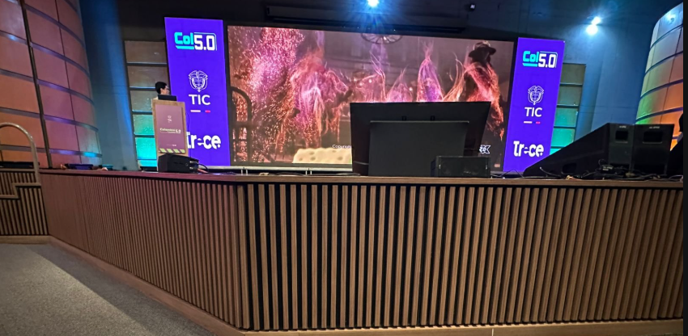
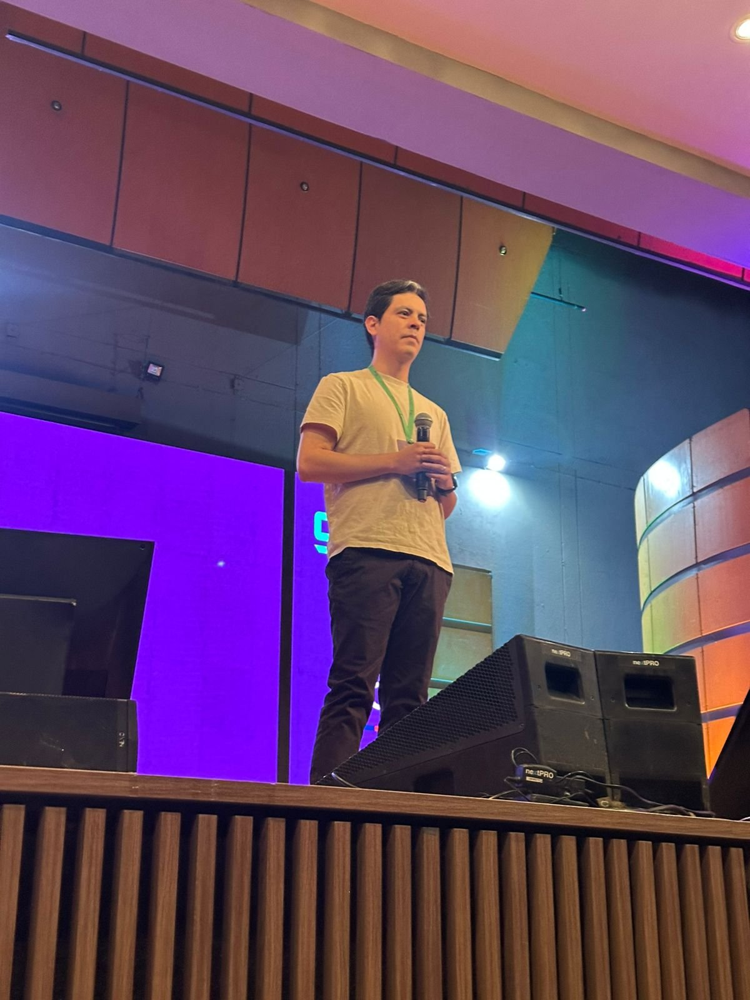
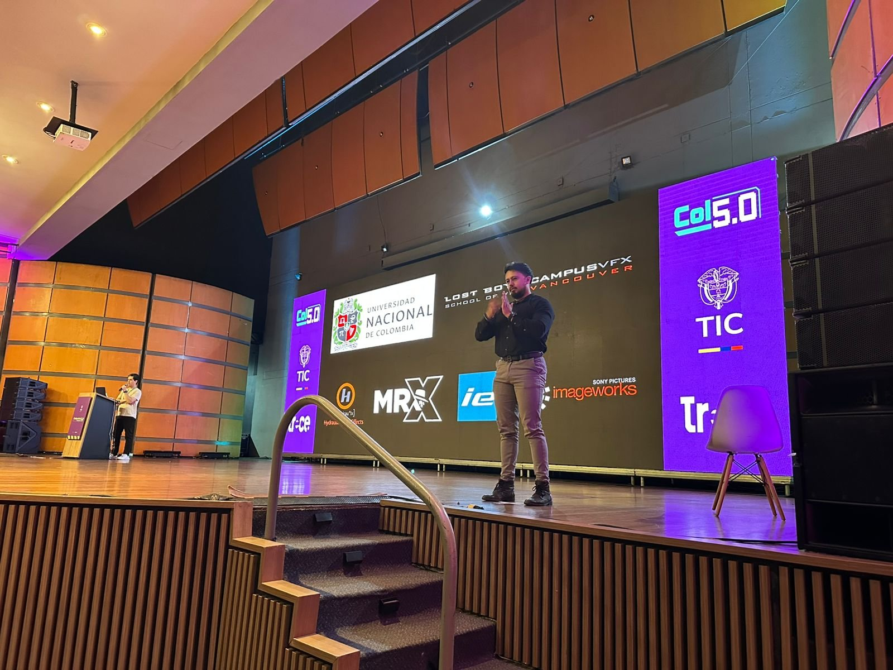
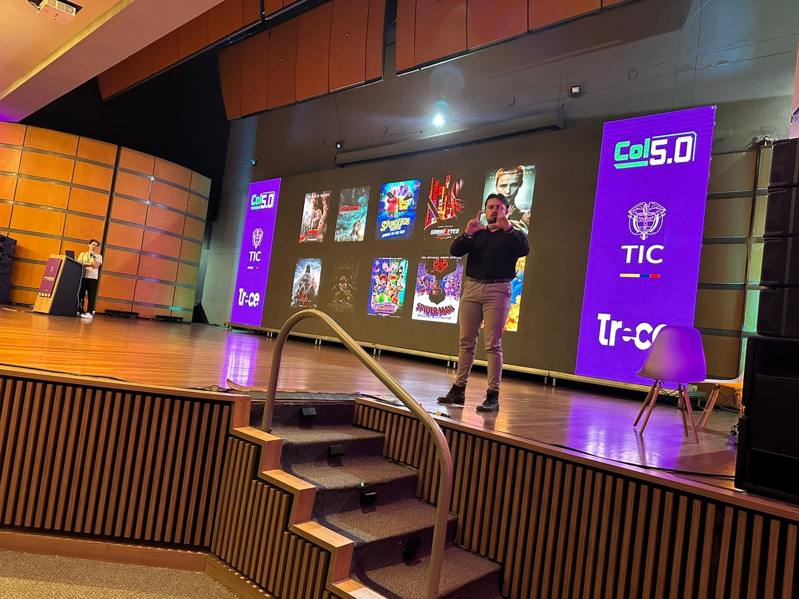
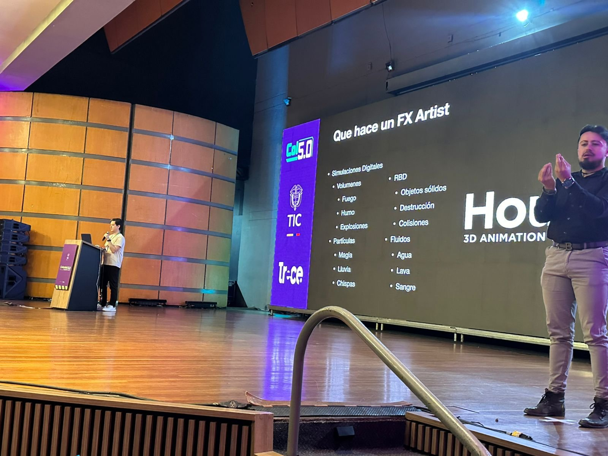
Análisis profundo del impacto de la inteligencia artificial en la sociedad usando el universo de Spider-Man como metáfora: los 'héroes' que usan la IA para transformar la educación, la ciencia, la economía y la sociología, frente a los 'villanos' que la emplean para manipular, desinformar y concentrar poder. La conferencia plantea que la IA será una entidad no biológica con agencia propia y nos desafía a elegir de qué lado estar.
"Jair Ramírez nos recordó que con gran poder viene gran responsabilidad —la misma lección de Spider-Man—. La IA no es neutra: puede ser la herramienta que democratice el conocimiento o el mecanismo que profundice las desigualdades. Somos nosotros, como sociedad, quienes decidimos si seremos héroes o villanos en este nuevo mundo digital."
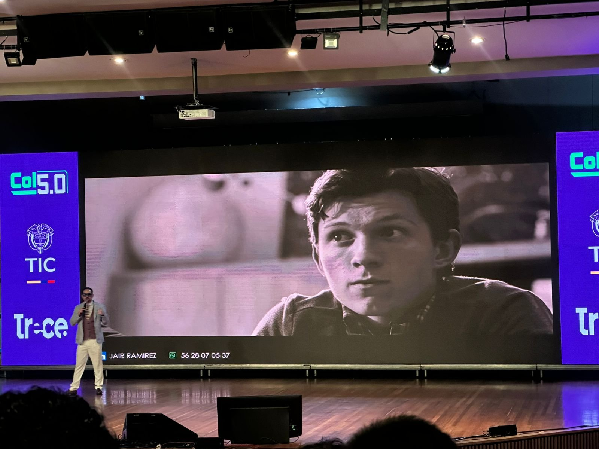
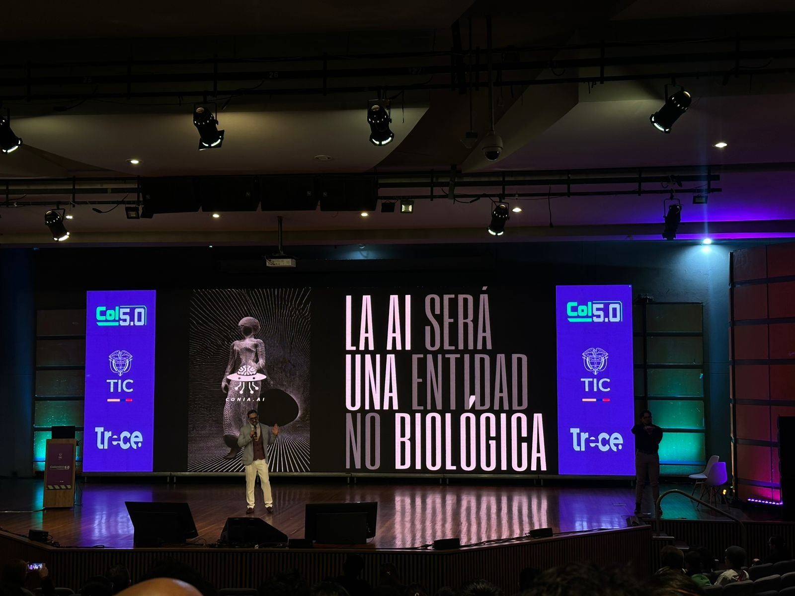
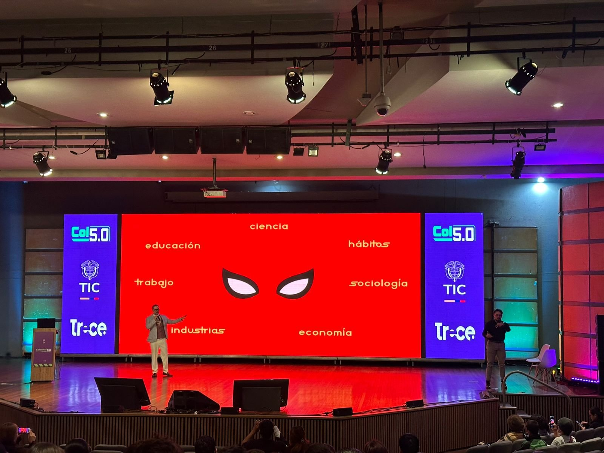
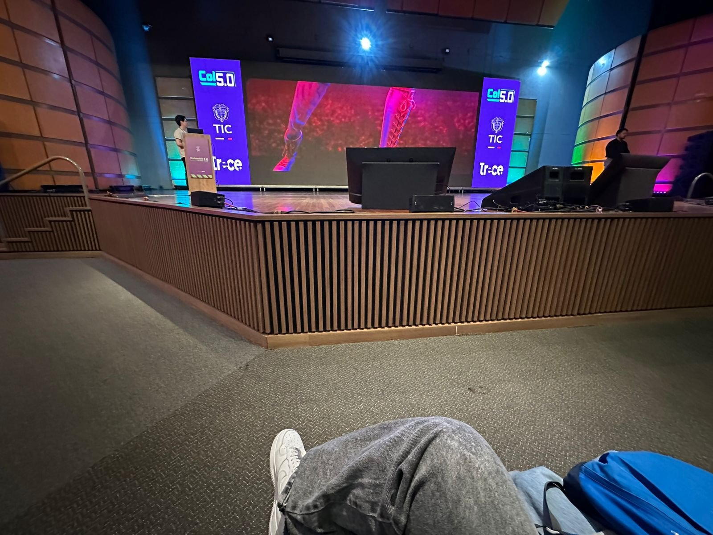
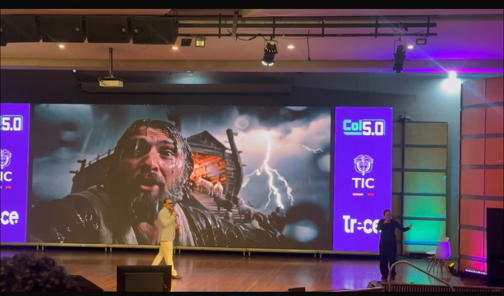
Conceptos clave de las conferencias en español e inglés con su definición.
Artista especializado en crear efectos visuales digitales como fuego, humo, explosiones, fluidos y partículas en producciones audiovisuales.
Técnicas y procesos para crear imágenes que no se pueden capturar fácilmente durante la grabación en vivo, generadas mediante software especializado.
Técnica de animación que modela el comportamiento de miles de objetos pequeños (partículas) para replicar fenómenos como chispas, lluvia, nieve o magia.
Software de animación y efectos visuales procedurales de alto nivel utilizado en producciones de Hollywood para crear simulaciones complejas de fluidos, destrucción y partículas.
Proceso computacional que convierte modelos 3D y datos de escena en imágenes 2D finales, calculando iluminación, texturas, sombras y efectos visuales.
Recreación digital del comportamiento físico de líquidos y gases, como agua, lava o sangre, mediante ecuaciones matemáticas aplicadas en software 3D.
Simulación del comportamiento de objetos sólidos que no se deforman al colisionar o destruirse, como paredes, rocas o escombros en explosiones digitales.
Proceso de combinar múltiples elementos visuales de diferentes fuentes —imágenes reales, CGI y efectos— en una sola imagen final coherente.
Método de generar animaciones automáticamente a través de algoritmos matemáticos y reglas de simulación, en lugar de animar manualmente cada fotograma.
Género musical de Corea del Sur caracterizado por su alta producción audiovisual, coreografías complejas y un uso intensivo de efectos visuales y animación digital en sus videoclips.
Flujo de trabajo estructurado en una producción audiovisual que define las etapas, herramientas y responsabilidades desde el concepto hasta la entrega final del producto.
Arte visual creado mediante software de gráficos por computadora para producir imágenes estáticas o animadas usadas en cine, televisión, videojuegos y publicidad.
Técnica de renderizado que simula cómo la luz interactúa con partículas en el aire —polvo, niebla, humo— para crear efectos de rayos de luz visibles y atmósfera.
Proceso de aplicar imágenes o patrones digitales sobre modelos 3D para darles apariencia de materiales como piel, metal, madera, tela u otros acabados visuales.
Punto específico en una línea de tiempo de animación que define los valores de posición, rotación o escala de un objeto, entre los cuales el software interpola el movimiento.
Campo de la informática que desarrolla sistemas capaces de realizar tareas que normalmente requieren inteligencia humana, como razonar, aprender, reconocer patrones y tomar decisiones.
Subconjunto de la inteligencia artificial que permite a los sistemas aprender y mejorar automáticamente a partir de la experiencia y los datos sin ser programados explícitamente.
Técnica de machine learning basada en redes neuronales artificiales con múltiples capas que permite a los sistemas reconocer patrones complejos en grandes volúmenes de datos.
Conjunto finito de instrucciones o reglas bien definidas que, seguidas en orden, permiten resolver un problema o realizar una tarea computacional de forma sistemática.
Modelo computacional inspirado en el cerebro humano, formado por nodos interconectados (neuronas artificiales) que procesan información para reconocer patrones y realizar predicciones.
Rama de la IA que permite a las computadoras entender, interpretar y generar lenguaje humano de manera natural, usada en asistentes virtuales, traductores y chatbots.
Uso de tecnología para realizar tareas o procesos con mínima intervención humana, optimizando la eficiencia, reduciendo errores y liberando tiempo para actividades de mayor valor.
Sistema de inteligencia artificial autónomo capaz de percibir su entorno, tomar decisiones y ejecutar acciones para alcanzar objetivos específicos sin supervisión humana continua.
Desigualdad en el acceso, uso y beneficio de las tecnologías de la información y comunicación entre diferentes grupos sociales, regiones geográficas o países.
Tipo de inteligencia artificial capaz de crear contenido nuevo —texto, imágenes, música, código— a partir de patrones aprendidos en grandes conjuntos de datos de entrenamiento.
Proceso de integración de tecnologías digitales en todas las áreas de una organización o sociedad, cambiando fundamentalmente cómo opera y entrega valor a las personas.
Espacio virtual compartido y persistente que combina realidad aumentada, realidad virtual e internet, donde los usuarios pueden interactuar, trabajar, crear y socializar mediante avatares digitales.
Conjunto de principios y directrices morales que guían el desarrollo y uso responsable de la inteligencia artificial, abordando temas como la equidad, la privacidad, la transparencia y el impacto social.
Práctica de proteger sistemas, redes y programas de ataques digitales que buscan acceder, modificar o destruir información sensible o interrumpir procesos tecnológicos.
Red interconectada de organizaciones, personas, tecnologías y recursos digitales que coexisten e interactúan creando valor conjunto en un entorno tecnológico en constante evolución.
La tecnología es una extensión de nuestros valores. Como recordó Jair Ramírez parafraseando a Spider-Man: con gran poder viene gran responsabilidad. Cada herramienta digital que creamos o usamos refleja nuestras decisiones éticas como sociedad.
Colombia 5.0 pone sobre la mesa una pregunta urgente: ¿cómo garantizar que los beneficios de la IA y la animación digital lleguen a todos los rincones del país y no profundicen las desigualdades existentes? La innovación debe ser para todos.
La animación y los efectos visuales que mostró Andrés Felipe Pulido no son solo entretenimiento: son una industria que puede generar empleo creativo de alto valor en Colombia. Invertir en educación artística y tecnológica es invertir en el futuro del país.
La inteligencia artificial no debe reemplazar lo humano sino potenciarlo. Los avances tecnológicos en ciencia, medicina, educación y economía deben estar orientados por principios éticos que protejan la dignidad, la privacidad y los derechos de todas las personas.
«La tecnología más poderosa no es la que nos hace más eficientes, sino la que nos hace más humanos.»
— Reflexión Colombia 5.0, 2026